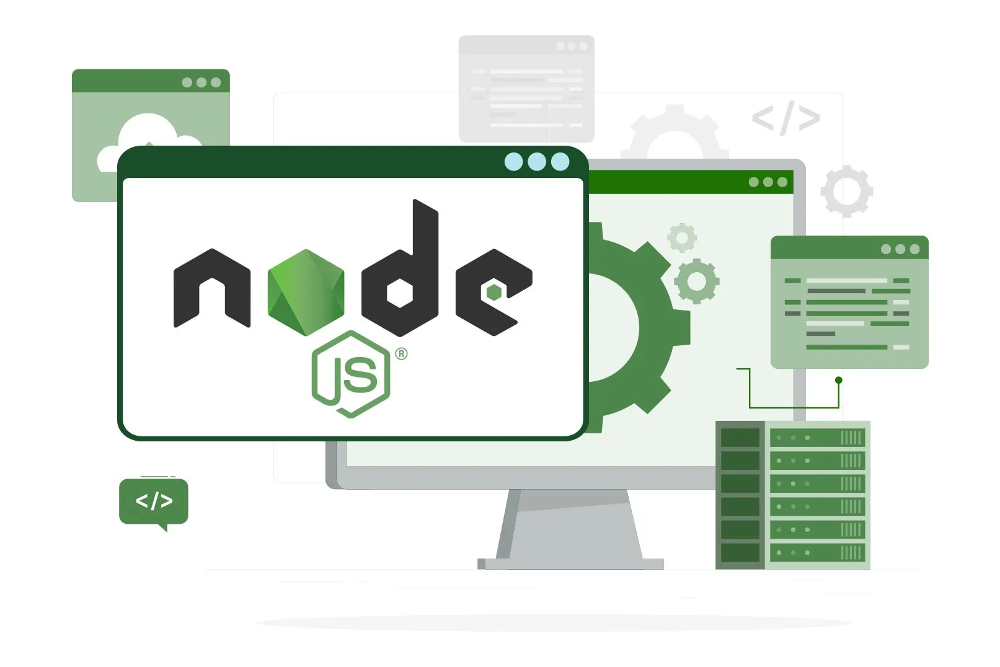
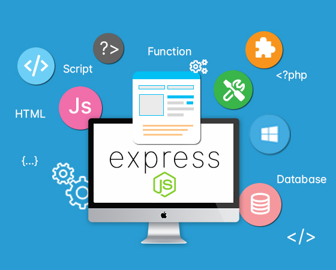

My Blogs
My Learning journey : JAVA

Java is a high-level, object-oriented programming language developed by Sun Microsystems (now owned by Oracle Corporation) in 1995. It was designed to be platform-independent and follows the principle of "Write Once, Run Anywhere" (WORA), meaning compiled Java code can run on any platform that supports Java without recompilation.Java manages memory allocation and deallocation automatically.
- Object-Oriented
- Platform-Independent
- Reliable and Secure
- Large Community
My Learning journey : HTML
HTML, or HyperText Markup Language, is the standard language used to create and design web pages. It's the backbone of all websites, providing the structure for content on the web. With HTML, you can define headings, paragraphs, links, images, and more, making it essential for web development.
- Basic Structure
- HTML uses tags like h1, p, and a to create different parts of a web page
- Attributes like href for links or src for images.
- HTML forms
My Learning journey : CSS

CSS is a style sheet language used for describing the presentation of a document written in HTML or XML. It enables the separation of content (HTML) from design (CSS), allowing for greater flexibility and control in the presentation layer.Defines the rectangular boxes generated for elements in the document tree and includes properties like margin, border, padding, and content.
- Used to target HTML elements.
- Techniques like Flexbox and Grid allow for complex layouts
- Box Model
- Responsive Design
- Selectors
My Learning journey : JAVASCRIPT

JavaScript is a high-level, interpreted programming language primarily used for creating interactive effects within web browsers. It is a core technology of the World Wide Web, alongside HTML and CSS.
- Event-Driven
- Dynamic Typing
- First-Class Functions
- Asynchronous Programming
- Browser-Specific Features
- ES6+ Features
- Development and Debugging
My Learning journey : REACT

React is an open-source JavaScript library for building user interfaces, particularly single-page applications where data changes over time. It was developed by Facebook and allows for the creation of reusable UI components.
- Component-Based
- Virtual DOM
- JSX (JavaScript XML)
- Hooks
- State Management
- Performance Optimization
- Routing
My Learning journey : NODE JS
Node.js is an open-source, cross-platform JavaScript runtime environment that executes JavaScript code outside of a web browser. It is designed to build scalable network applications.
- Non-Blocking I/O
- Single-Threaded
- npm (Node Package Manager)
- JavaScript Runtime
- Performance and Scalability
- Frameworks and Libraries
- Security
- Testing
My Learning journey : EXPRESS JS
Express.js is a minimal and flexible Node.js web application framework that provides a robust set of features for web and mobile applications. It facilitates the rapid development of Node.js applications.Functions that have access to the request object, response object, and the next middleware function in the applications request-response cycle.Defines a way to handle different HTTP methods and routes.Supports various template engines to dynamically render HTML pages.
- Minimalistic Framework
- Query Strings and Bodies
- Cross-Origin Resource Sharing (CORS)
- Input Validation
- Load Balancing
- Deployment and DevOps
My Learning journey : MONGODB
MongoDB is a NoSQL, document-oriented database that stores data in JSON-like documents with dynamic schemas. It is designed for scalability and flexibility.MongoDB uses internal memory mapping for faster data access and supports indexing to improve query performance.MongoDB supports various types of indexes, including single field, compound, multi-key, geospatial, and text indexes. Indexes improve query performance by speeding up data retrieval.
- Document-Based
- Schema-less
- Supports horizontal scaling via sharding
- Aggregation Framework
- Operations like filtering, grouping, and sorting
- Authentication and Authorization